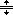
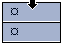
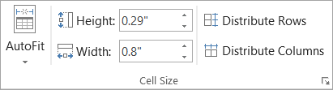
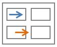

Adjust the table size, column width, or row height manually or automatically. You can change the size of multiple columns or rows and modify the space between cells. If you need to add a table to your Word document, see create a table.
To change the column width, do one of the following:
To use your mouse, rest the cursor on right side of the column boundary you want to move until it becomes a resize cursor , and then drag the boundary until the column is the width you want.
To change the width to a specific measurement, click a cell in the column that you want to resize. On the Layout tab, in the Cell Size group, click in the Table Column Width box, and then specify the options you want.
To make the columns in a table automatically fit the contents, click on your table. On the Layout tab, in the Cell Size group, click AutoFit, and then click AutoFit Contents.
To use the ruler, select a cell in the table, and then drag the markers on the ruler. If you want to see the exact measurement of the column on the ruler, hold down ALT as you drag the marker.
To change the row height, do one of the following:
To use your mouse, rest the pointer on the row boundary you want to move until it becomes a resize pointer  , and then drag the boundary.
To set the row height to a specific measurement, click a cell in the row that you want to resize. On the Layout tab, in the Cell Size group, click in the Table Row Height box, and then specify the height you want.
To use the ruler, select a cell in the table, and then drag the markers on the ruler. If you want to see the exact measurement of row on the ruler, hold down ALT as you drag the marker.
Select the columns or rows you want to make the same size. You can press CTRL while you select to choose several sections that are not next to each other.
On the Layout tab, in the Cell Size group, click Distribute Columns or Distribute Rows .
|
TO SELECT |
DO THIS |
|---|---|
|
The entire table |
Rest the pointer over the table until the table move handle appears, and then click the table move handle. |
|
A row or rows |
Click to the left of the row. |
|
A column or columns |
Click the column's top gridline or border.  |
|
A cell |
Click the left edge of the cell. |
Automatically adjust your table or columns to fit the size of your content by using the AutoFit button.
Select your table.
On the Layout tab, in the Cell Size group, click AutoFit.

Do one of the following.
To adjust column width automatically, click AutoFit Contents.
To adjust table width automatically, click AutoFit Window.
If you don’t want AutoFit to automatically adjust your table or column width, you can turn it off.
Select your table.
On the Layout tab, in the Cell Size group, click AutoFit.
Click Fixed Column Width.
Rest the cursor on the table until the table resize handle appears at the lower-right corner of the table.
Rest the cursor on the table resize handle until it becomes a double-headed arrow .
Drag the table boundary until the table is the size you want.
To add space inside your table, you can adjust cell margins or cell spacing.

Cell margins are inside the table cell, like the blue arrow on the top of the graphic. Cell spacing is between the cells, like the orange arrow on the bottom.
Click the table.
On the Layout tab, in the Alignment group, click Cell Margins, and then in the Table Options dialog box
Do one of the following:
Under Default cell margins, enter the measurement you want to adjust the Top, Bottom, Left, or Right margins.
Under Default cell spacing, select the Allow spacing between cells check box, and then enter the measurement you want.